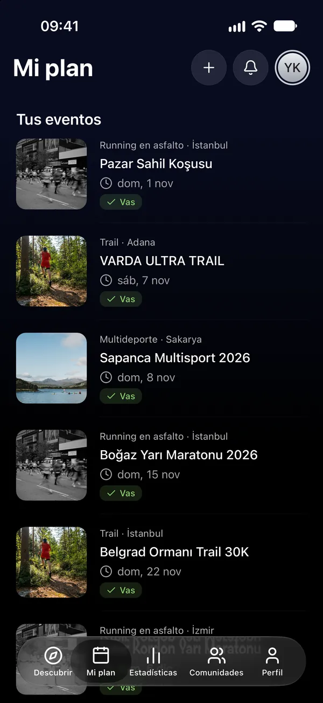
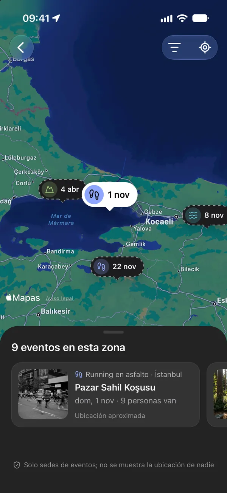
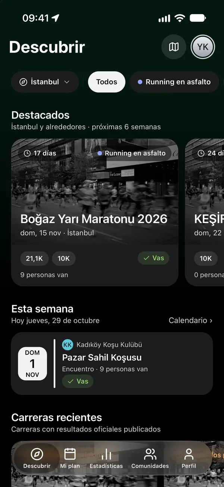
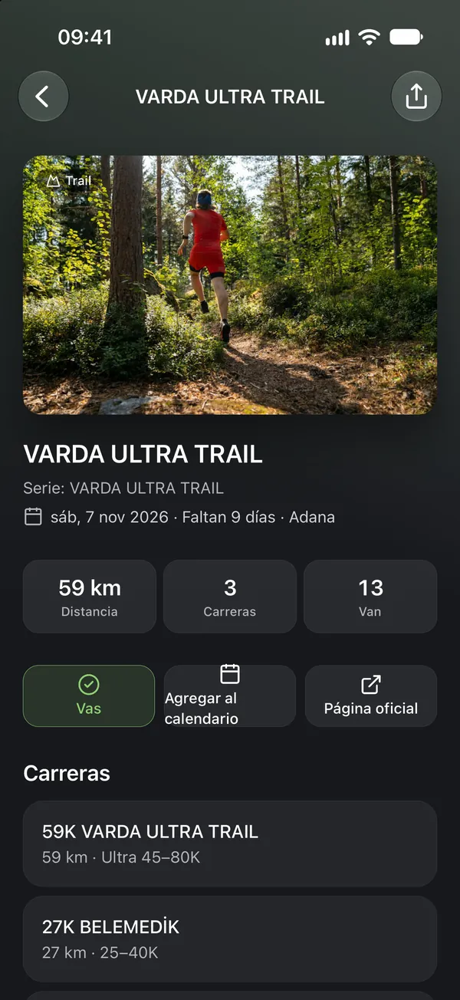
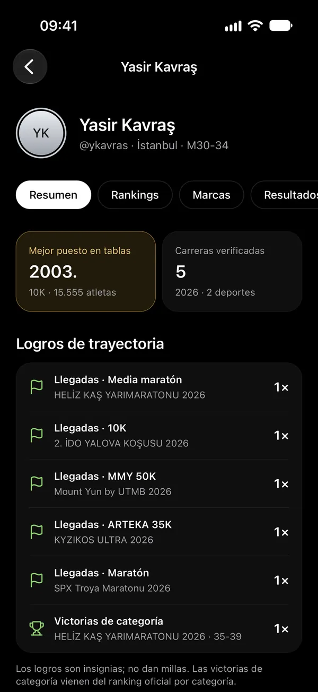
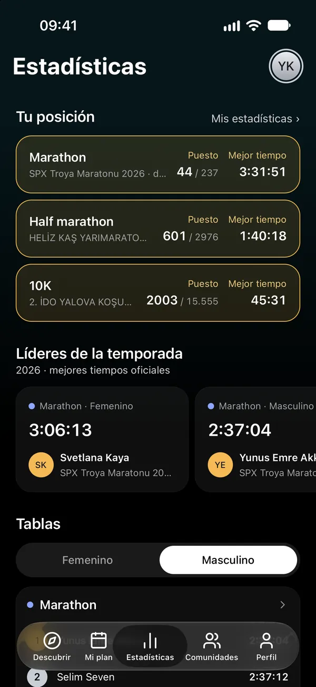
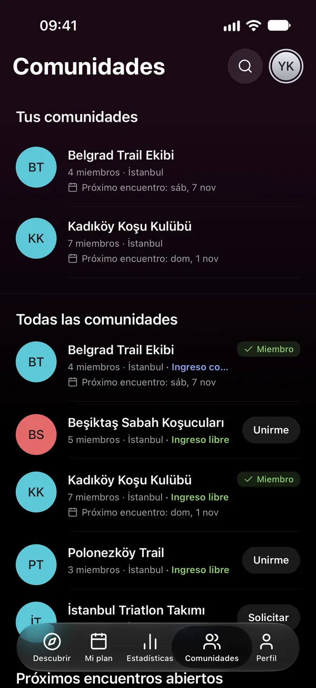

06Calendario
En tu calendario, siempre al día.
Agrega un evento a tu calendario con un toque, o vincula tu plan al calendario de tu teléfono como una suscripción en vivo; si cambia una fecha, tu calendario se actualiza.

RUNNING EN ASFALTO · TRAIL · HYROX · TRIATLÓN · AGUAS ABIERTAS
Encuentra tu carrera, construye tu trayectoria.
Descubre carreras de running, trail, HYROX, triatlón y aguas abiertas y encuentros de clubes por ciudad y deporte. Mira quién va y deja que tus resultados oficiales se sumen a tu trayectoria.
Descárgalo en el App Store01Descubrir
Explora carreras y encuentros de clubes por ciudad y deporte, y velos todos de un vistazo en el mapa de eventos.


02Mi plan
Di “Voy” y el evento entra en tu plan. Mira a dónde van las personas que sigues y elige quién ve tu plan.
¿Quién ve tu plan?

03Trayectoria
Los resultados vienen de la lista oficial del organizador. Elige tu carrera, encuentra tu resultado y di “Soy yo”; una vez aprobado, se suma a tu trayectoria y a tus marcas personales.

04Estadísticas
Las tablas se llenan con resultados oficiales de empresas de cronometraje que permiten rankings. Mira a los líderes de la temporada en tu deporte y formato, y dónde estás tú.

05Comunidades
Encuentra tu club y únete; mira sus encuentros en Mi plan y no te pierdas ningún anuncio. Puedes unirte a encuentros abiertos sin ser miembro.

06Calendario
Agrega un evento a tu calendario con un toque, o vincula tu plan al calendario de tu teléfono como una suscripción en vivo; si cambia una fecha, tu calendario se actualiza.

07Seguimiento y notificaciones
Sigue a corredores y clubes. Entérate cuando cambie una carrera de tu plan, se apruebe tu resultado o tu club publique un anuncio.
Descarga Raceport y empieza a planificar tu temporada.
Descárgalo en el App Store